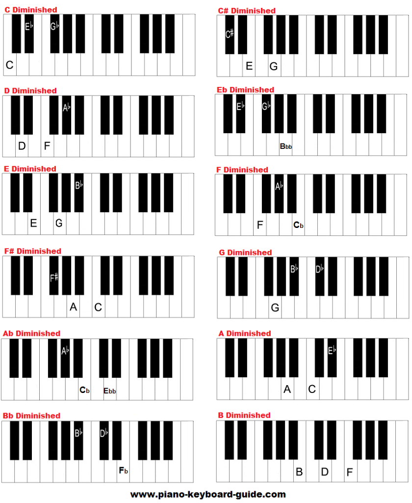

Diminished chords differ from major and minor chords, in that they, according to Landr.com, add a tense, dissonant sound when added to music.
Diminished chords are created by adding a minor third and a tritone above the root. A minor third, as mentioned before, is 3 semitones up, while a tritone is 6 semitones. Therefore, to create a diminished chord, you would go up 3 semitones from the root, and then up 3 (or up 3 from the root and up 6 from the root).According to Musical-u.com, some popular songs with diminished chords include Mariah Carey's "All I Want for Christmas", The Beatles' "Michelle", and "Somewhere over the Rainbow" from The Wizard of Oz.